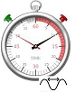
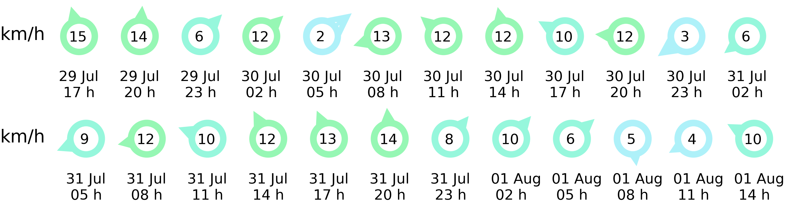
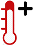
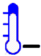

This project has received funding from the European Union's Horizon 2020 research and innovation programme under grant agreement No. 862626

Significant Wave Height (SWH)
Significant Wave Height (SWH)
Swell Waves SWH
Swell Waves SWH



Current temperature

Max. forecast temperature

Current oxygen saturation
Mean forecast temperature
Current turbidity

Min. forecast temperature